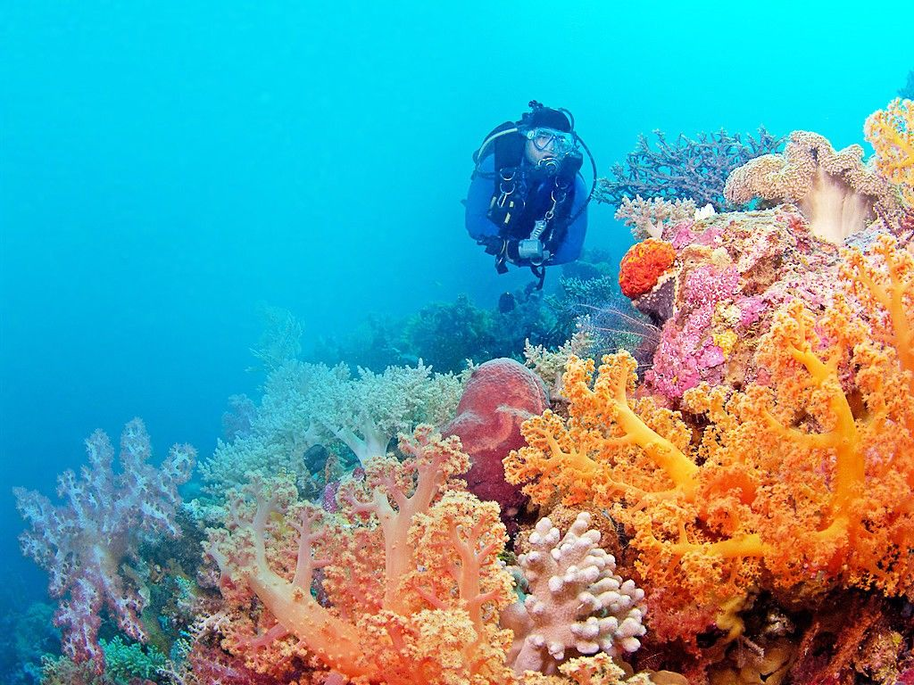
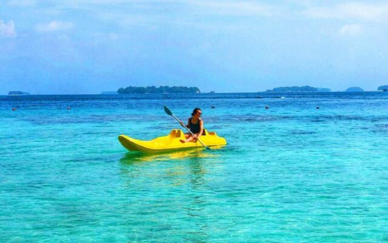
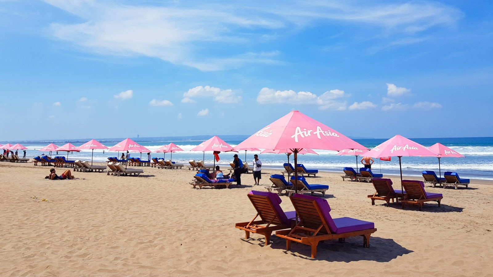

1. Hoga island, Wakatobi
Hoga Island is an island located in Wakatobi, Southeast Sulawesi. This island is one of the best
underwater tourism island in the world with thousands of international and domestic tourists each year.
This island offers insight into a beautiful diving and snorkeling experience with beautiful coral reefs and a pristine ecosystem.

2. Seribu islands, Jakarta
Seribu islands is a cluster of islands located in North Jakarta bay. It consists of
islands used for settlement, tourist spots, and conservation areas. There are lots of
maritime-related activities that could be done in these islands such as snorkeling
and diving.

3. Seminyak beach, Bali
As one of the islands located in the Nusa Tenggara cluster. There are lots of
beaches located in Bali. One of them is the Seminyak Bali. Many activities could be done
in Seminyak Beach such as kayaking, snorkeling, swimming, water sports, and etc.
